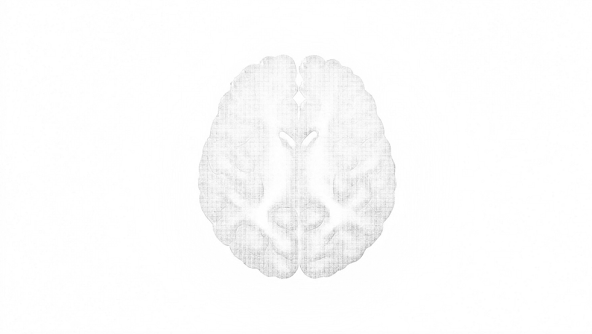

C-PAC
About
Neuroimaging
Pipelines
How to Use
Tutorials
Projects
User Support
Appendix
this page is under construction. to suggest content-related edits, please open a
content-related PR
.

C-PAC
Configurable Pipeline for the Analysis of Connectomes
see the code